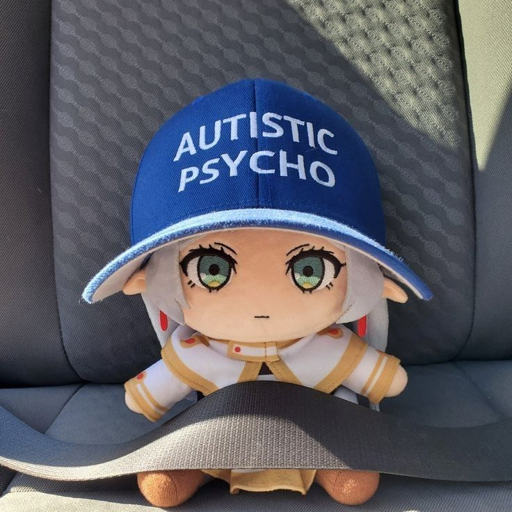

Universitas Brawijaya
AIoT Research Member @ FILKOM Research Group
An Electrical Engineering student with interests in Artificial Intelligence, Computer Vision, Embedded Systems, and AIoT. My work focuses on applying machine learning and computer vision techniques to real-world problems while exploring deployment on edge devices and embedded platforms.
I am an Electrical Engineering student at Universitas Brawijaya who is passionate about the intersection of Artificial Intelligence, Embedded Systems, and Computer Vision.
My interests lie in developing intelligent systems that can operate efficiently on edge devices, combining machine learning models with hardware platforms for practical applications.
Beyond academic activities, I actively explore Linux systems, open-source technologies, and research-driven projects to deepen my technical understanding and engineering mindset.
Research focused on implementing and fine-tuning YOLOv8-seg for automated catfish seed size prediction and segmentation. This work combines deep learning model development with practical deployment considerations on embedded hardware, targeting real-world aquaculture measurement challenges.
Implementation and fine-tuning of a segmentation model for catfish seed measurement and prediction. Includes manual dataset labeling, model training, and evaluation on edge hardware.
Computer vision project focused on pedestrian segmentation using YOLOv8 segmentation models. Explores real-time inference and model accuracy in varied environments.
Personal experience documenting the process, challenges, and lessons learned while installing Arch Linux — from partition setup to a working desktop.
Learning Linux and cybersecurity fundamentals through OverTheWire Bandit challenges. Walkthrough of early-level SSH and file navigation puzzles.
Continuation of cybersecurity learning through practical Linux command-line exercises. File permissions, globbing, and string manipulation.
Discussion of dataset preparation, manual annotation choices, and model selection decisions during an AI research project on catfish seed detection.
Open to research opportunities, internships, and technical collaboration.
Whether you're interested in Computer Vision, AIoT projects, or Embedded AI development — feel free to reach out. I'm always looking to work on meaningful, research-driven problems.